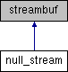

Processor Counter Monitor
Public Member Functions
|
List of all members
null_stream Struct Reference
Inheritance diagram for null_stream:

Public Member Functions
void
overflow
(char)
The documentation for this struct was generated from the following file:
utils.h
Generated by
1.8.13
 1.8.13
1.8.13